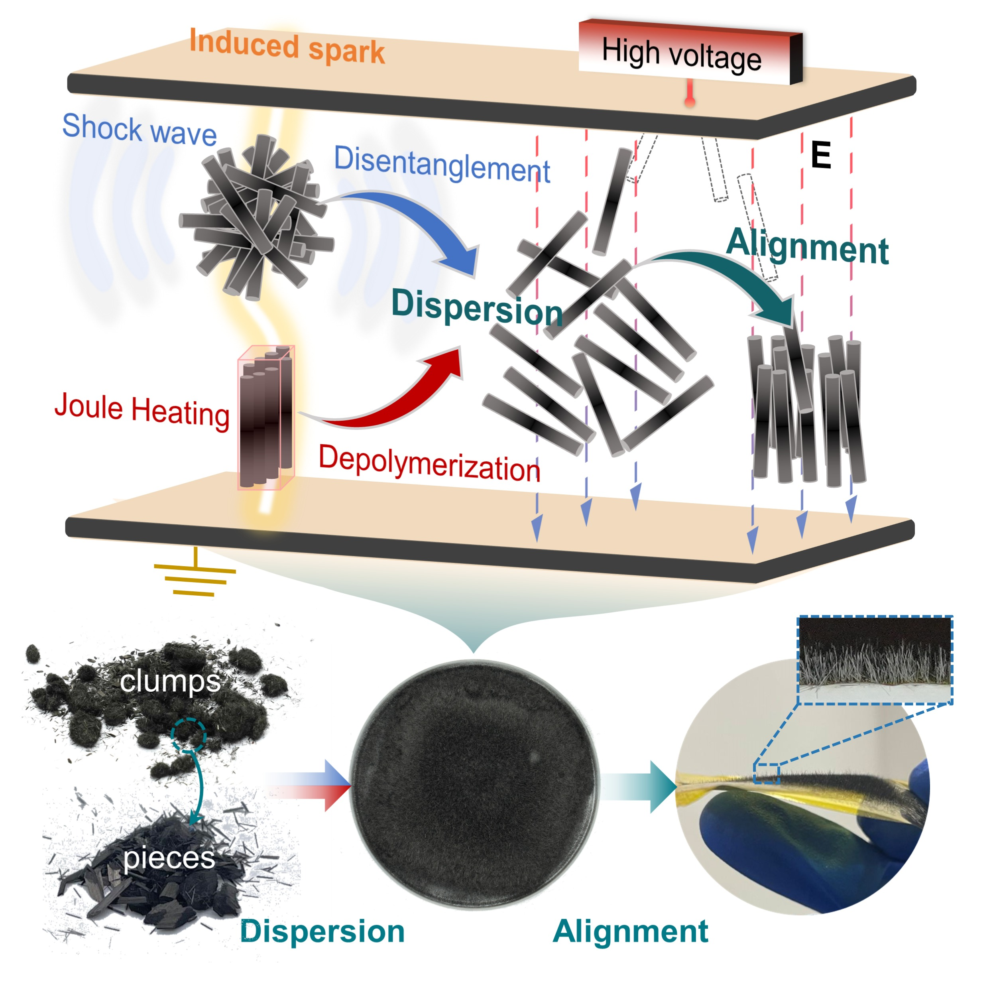
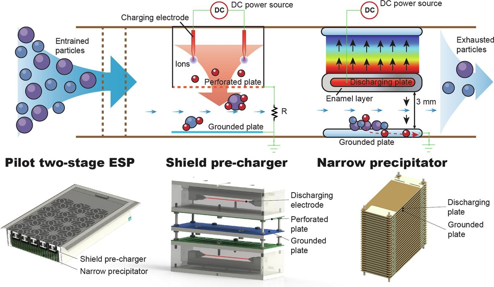

Yu Tian, Shuran Li, Mengze Li, Yihan Fu, Weidong Zhu, Keping Yan, Yinglin Ke.
Synergistic effects of periodic weak spark and spatial electric field for one-step dispersion of carbon-based micro/nanomaterial agglomerates.Composites Part A: Applied Science and Manufacturing 2024, 177: 107882.

Yu Tian, Shuran Li, Yihan Fu, Mengze Li, Weidong Zhu, Keping Yan, Yinglin Ke.
High-quality electrostatic recycling of waste carbon fiber via spark-driven shock waves and Joule heating.Composites Part B: Engineering 2023, 263: 110880.

Yu Tian, Mengze Li, Yihan Fu, Licui Liu, Shuran Li, Weidong Zhu, Yinglin Ke, Keping Yan.
Development and experimental investigation of the narrow-gap coated electrostatic precipitator with a shield pre-charger for indoor air cleaning.Separation and Purification Technology 2023, 309: 123114.